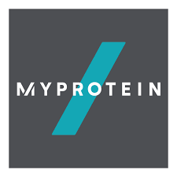

Bienvenido a MyProtein
Creado por: Andrei Daniel Vlad
- Acceda a la página oficial de MyProtein
-
Página oficial de MyProtein
- Utilice el enlace siguiente para acceder a nuestro formuario
-
Clic aqui para acceder a nuestro formulario
- Utilice el enlace siguiente para acceder a nuestra lista de productos
-
Clic aqui para acceder a nuestra lista de productos
En nustra web podrás encontrar artículos como los siguientes:
-
Elige la proteína perfecta para ti
Encuentra el suplemento de proteínas adecuado para ti con la ayuda de nuestros expertos.
-
Beneficios del pre-workout
Descubre cómo dar a tus entrenamientos el impulso que necesitan.
-
El entrenamiento de hombro definitivo
Aprovecha al máximo tu tiempo en el gimnasio con esta rutina super efectiva.
-
Nunca perder de vista el objetivo
Lucy Turner y sus objetivos.
